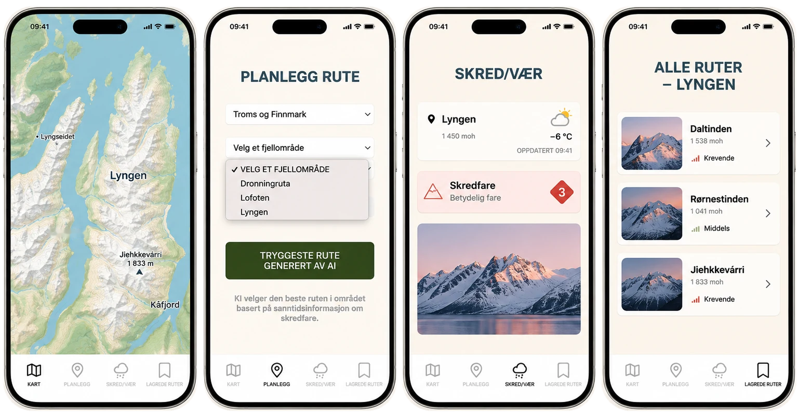

Skredvett.
Hvordan kan vi gjøre det enklere å finne fram og planlegge turer i skredutsatt terreng? Dette var utgangspunktet for Skredvett, et prosjekt vi utviklet i MIX203 ved Universitetet i Bergen. Oppgaven var å utforme en app som kunne gi turgåere bedre oversikt over både terrenget og forholdene de måtte ta hensyn til før en tur. Vi tok i bruk API-er for kart, vær og skredinformasjon for å utforske hvordan relevant informasjon kunne samles på ett sted, i stedet for at brukeren måtte lete i flere ulike tjenester. Vi benyttet også et KI-API for å analysere tilgjengelige data om det valgte fjellområdet, blant annet informasjon om vær og skredfare. Dette brukte vi til å utforske hvordan appen kunne gi brukeren et bedre grunnlag for å vurdere risiko og velge rute. Selve appen ble utformet som en interaktiv prototype i Figma. Gjennom innsiktsarbeid og prototyping jobbet vi med hvordan brukeren kunne utforske kartet, velge fjellområde, sammenligne aktuelle ruter og lagre turer til senere. Målet var å gjøre turplanleggingen mer oversiktlig og brukervennlig, samtidig som skredfare og værforhold fikk en naturlig plass i beslutningsprosessen.

Kart · Planlegg rute · Skred/vær · Alle ruter i Lyngen